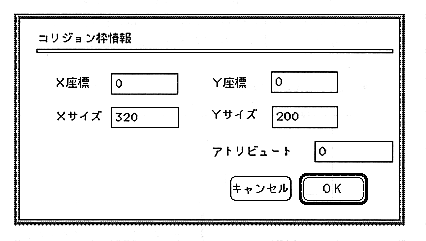

Return to previous page ｜ Return to menu ｜ Go to next page
-
Collision frame information
Double-clicking within the collision frame opens the collision frame information dialog (Figure 2.14).

Figure 2.1 4 Collision Frame Information Dialog
- X coordinate, Y coordinate
The left frame information of the collision frame. Use this to adjust the position.
- X size, Y size
Collision frame size information.
- attribute
Not used for author players. Use this when creating an application using collision data without using the author player. The setting range is -32768 to 32767.
Return to previous page ｜ Return to menu ｜ Go to next page